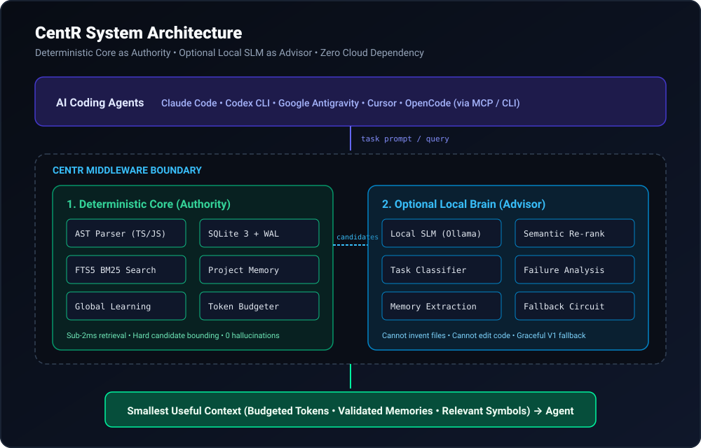

CentR Architecture Deep Dive
CentR is architected on a single inviolable principle: Deterministic Core is the authority; the optional Local Brain is an advisor.

The Two-Tier Subsystem
1. Deterministic Core (The Authority)
- AST Indexer: Extracts qualified function signatures, classes, interfaces, and exported symbols.
- SQLite 3 + WAL Mode: Fast concurrent in-process database storage.
- FTS5 BM25 Engine: Sub-2ms full-text ranking across symbols, file paths, and project memory.
- Token Budgeter: Greedy relevance packing to fit within context limits (e.g. 4000 tokens).
- Project Memory: Project-isolated institutional memory.
- Global Learning: Cross-project evidence-backed knowledge.
2. Optional Local Brain (The Advisor)
- Powered by local Small Language Models (0.5B–7B parameters via Ollama or custom local providers).
- Semantic re-ranking, task classification, and failure diagnosis.
- Hallucination Guard: Strictly prunes any invented candidate IDs; only Core candidates can be returned.
- Deterministic Fallback: If the local SLM is absent, slow, or times out, CentR automatically falls back to Core heuristics.